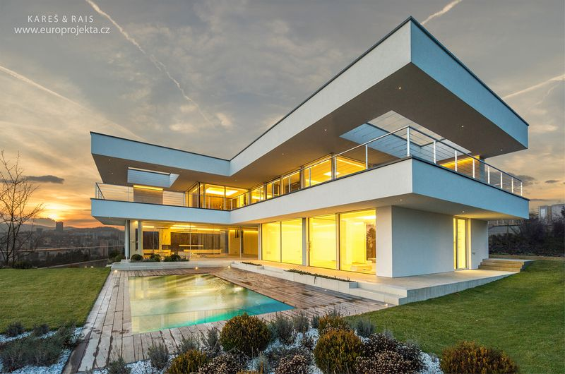
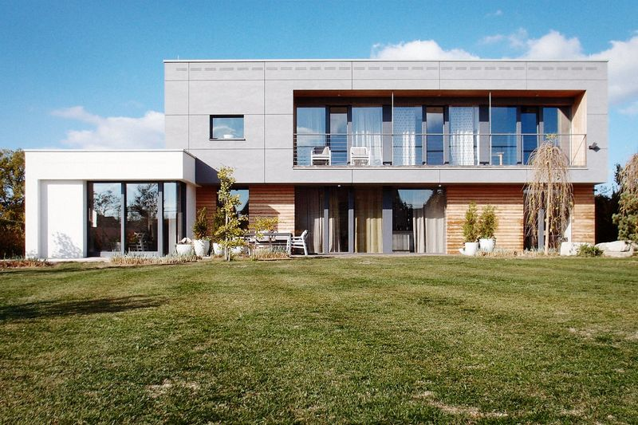

Výběr architekta a projektanta je při stavbě domu klíčový. Nemáme v našem okolí nikoho známého, a tak jsme hledali hlavně na internetu. Chtěli jsme někoho z Brna či blízkého okolí, komu by byl blízký funkcionalistický styl, který se nám líbí. Na začátku roku 2019 jsem sepsal zadání projektu a v březnu jsem začal oslovovat vybrané architekty. Některé ateliéry jsem znal už z dřívějška, např. poměrně známá Europrojekta, která navrhuje převážně moderní funkcionalistické vily. V průběhu času jsem si do záložek uložil následující architekty. Pět z nich jsme oslovili. Pak jsme se poznali s pány z Vize Ateliér, se kterými jsme si hned sedli a už nebylo potřeba hledat dál.
- Borák Architekti
- EA Architekti
- Europrojekta - Kareš Rais
- Chládek Architekti
- Kaplan Architekti
- Knesl Kynčl Architekti
- Magion Architekti
- Master Design
- Ateliér Partika
- Ateliér RAW
- Vize Ateliér

Zdroj: Vila Brno - Kociánka
Magion Architekti nám odpověděli, že nepřijímají nové zakázky. Knesl Kynčl Architekti byli na půl roku vytížení. Pan Partika po několika vyměněných e-mailech přestal reagovat. To mě trochu zamrzelo, protože byl pro mě jedním z favoritů. Specializuje se na pasivní domy z VPC a několik lidí si ho velmi chválilo (dělal projekt např. pro Vodníky a Doubkovi).
S panem Karešem z Europrojekty jsem měl tu čest sejít se osobně. Byla to nesmírně zajímavá a zábavná schůzka. Pan Kareš, žák slavného brněnského architekta Ivana Rullera, na mě zapůsobil jako trochu šílený umělec, samozřejmě v dobrém slova smyslu. Svým přístupem a zkušenostmi na mě rozhodně udělal dojem. Líbilo se mi, že se hodně zajímal o to kdo jsem, odkud pocházím, co dělám a co se mi líbí. Zajímají ho lidské příběhy, a proto se soustředí pouze na rodinné domy a vily. Je pro něj důležité, aby si s klientem lidsky sednul. Chce znát jeho vkus a klient musí projevit své emoce, aby mohl vzniknout ideální dům. Přístup “líbí se mi tento dům, navrhněte mi podobný” nebere. Ačkoliv se mi domy od Europrojekty velmi líbí a pan Kareš s panem Raisem mají mé uznání, došel jsem k závěru, že to není pro nás. Europrojekta se zaměřuje spíše na dražší rodinné vily za 10 milionů a více. Pan Kareš odhadl cenu studie našeho domu na 120000 Kč, což už mi přišlo poměrně hodně (je to dvojnásobná cena oproti tomu, co jsme nakonec zaplatili našim architektům). Potom mi ještě přišlo, že se více zaměřují na vizuální/uměleckou stránku, než na tu technickou/funkční. Moji otázku na pasivní standard pan Kareš tak nějak přešel, takže si nejsem jistý jejich zkušenostmi s pasivními domy.
Naše architekty z Vize Ateliér jsem objevil uplně náhodou přes článek na Novinky.cz, kde byli představeni vítězové soutěže Pasivní dům roku 2018. Cenu poroty v kategorii rodinné domy získal pasivní dům ve Františkových Lázních. Ten dům se mi moc líbil, a tak jsem hledal, kdo ho navrhl. Dozvěděl jsem se, že autoři pochází z Brna a soustředí se výhradně na pasivní domy. Trefa do černého! Mimo jiné se proslavili také svým originálním domem Vějíř v Bystrci. Zjistil jsem, že mají přednášet na Stavebním veletrhu v Brně, který zrovna ten týden probíhal a který jsem se shodou okolností chystal také navštívit. Vydal jsem se tedy na stavební veletrh, abych se mohl s pány z Vize Ateliér potkat osobně. Pan Krč (architekt) přednášel o stavbě svého rodinného domu v Letovicích. Pan Kubíček (projektant) měl přednášku o domech budoucnosti. Měl jsem možnost si s oběma popovídat a přišlo mi, že svému oboru skutečně rozumí, mají zkušenosti a práce je baví. Vyměnili jsme si kontakty a domluvili schůzku. Na schůzce nám popsali, jak probíhá spolupráce s nimi a ukázali nám reference. Měli jsme z toho dobrý pocit, pan Krč s panem Kubíčkem nám byli sympatičtí, a tak jsme se rozhodli s nimi rozjet spolupráci.

Zdroj: Pasivní dům ve Františkových Lázních
Proč jsme si vybrali Vize Ateliér? Protože mají mnoho zkušeností s pasivními domy, mají dobré technické znalosti, soustředí se na kvalitu a tvoří velmi detailní projektovou dokumentaci, aby se předešlo chybám během realizace. Firma byla založena v roce 2007 a je členem Centra pasivního domu. Pan Krč s panem Kubíčkem se skvěle profesně doplňují. Jeden tvoří architekturu, druhý projektuje. Majitelé firmy nejsou jen teoretici, ale oba si postavili vlastní pasivní dům. Pan Kubíček byl dokonce první v ČR, kdo postavil energeticky plusový dům Chimney. Mají dobré reference. Ateliér získal ocenění Pasivní dům roku. Nabízí pomoc s vyřízením stavebního povolení, dotace Nová zelená úsporám a autorský dozor přímo na stavbě. Provedou nás celou stavbou od začátku až do konce - od studie až po kolaudaci. Myslím si, že dobrý architekt musí mít svou práci rád a být tak trochu fanatikem - dělat osvětu, účastnit se konferencí, přednášet, inovovat, sbírat zpětnou vazbu. Mám pocit, že Vize Ateliér toto splňuje.